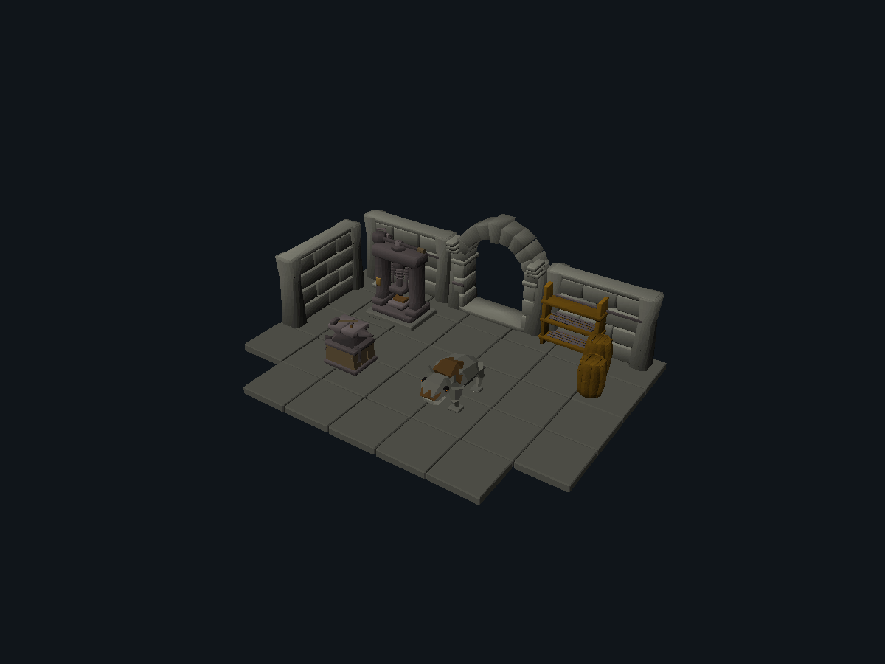
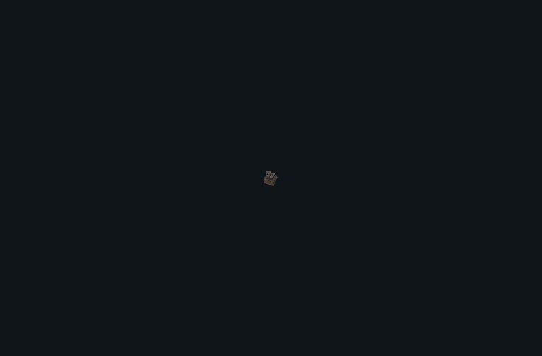
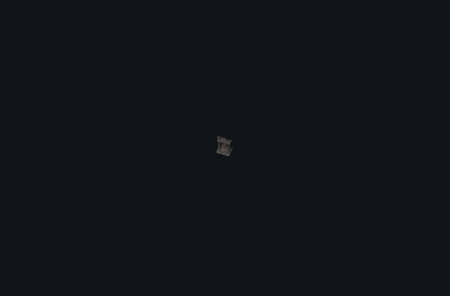
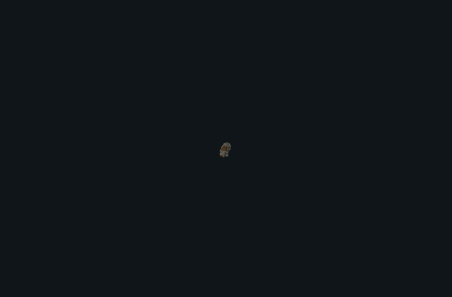
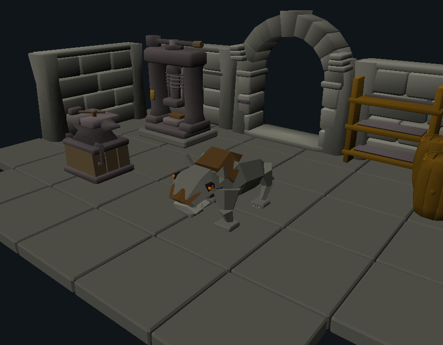

ASCENT / CINDERWORKS / CONTROLLED ART TEST / 17 OCTOBER 2026Forged forms. Living ash.
One faithful reconstruction, three original designs and a small workshop vignette. Every new asset was authored in headless Blender, saved and reopened, converted to the native model format and rendered by the existing Rust renderer. First passes are preserved.

Original scene assembly — B, C and D with existing original supporting sceneryA · Faithful anvil reconstruction
Independent reconstruction. Widened and offset the foot, lifted and blunted the horn, shortened the striking block and heel, and matched the restrained iron value. Remaining differences are bevels, smooth-normal shading and the waist transition. No cache mesh was imported.
Left: authentic revision 239.1 object 2097 (model 1251), Jagex reference imagery. Right: independently authored reconstruction. Identical camera, light 64/768 and native renderer. Paired detail crops are identical; full frames are linked below. Protected cache geometry is excluded.
Front
Side
Three-Quarter
Overlay, first pass and measured silhouette fidelity
| View | First pass IoU | Final IoU |
|---|
| front | 78.2% | 93.0% |
| side | 73.1% | 97.5% |
| quarter | 79.8% | 93.1% |
| gameplay | 74.7% | 91.8% |
Full reference frame · Full authored frame. Silhouette overlap is not a substitute for artistic judgment.
B · Split-die riveting station
Original split-die riveting station. The open die slot, long bending horn, forged clamps and low timber bolster define its construction. Refinement reduced the timber saturation and added a seated rivet and hammer to explain use.
First pass → final, and gameplay scale

Uncropped native gameplay-scale viewC · Counterweighted screw press
Original counterweighted screw press. Refinement connected the lever to the spindle, modeled a real helical thread and added guide springs and a billet. The first pass left the transmission unclear; the final load path reads through the open throat.
First pass → final, and gameplay scale

Uncropped native gameplay-scale viewD · Sootsnout ash burrower
Original Sootsnout ash burrower. Broadened the forepaws, thickened the forelegs, replaced peg-like ears with swept wedges and subdued the dorsal plates. Attack coils back with an open jaw before striking and recovering. Death folds the legs before the roll and holds the corpse.
First pass → final, and gameplay scale

Uncropped native gameplay-scale viewFive complete native actions
All exported ticks are included at 20 ms per native tick. Walk moves the legs through stance and swing; no whole-creature translation is used in these previews. Death includes the authored terminal hold.
Action refinement and contact sheets
329 native pose samples match the independent classic-transform calculation exactly. Walk contact proxy: no penetrating or floating stance samples; mean drift 2.23 native units, maximum 5.37 (128 units per tile). This is not physics validation. Generic body-support and attack-centroid diagnostic fields do not map to this anatomy and are not used as evidence.
Small workshop vignette
The press sits against the load-bearing wall; the riveting station leaves working clearance in front. The burrower occupies the floor between the service arch and work area. Supporting masonry, barrel, rack and lantern are unchanged original assets from the previous delivery.

Close composition — creature, workstations and service thresholdReview outcome and reproduction
The strongest measured result is the anvil reconstruction. Both industrial props have clearer construction than their first passes. The creature has five distinct actions, but its angular anatomy and material transitions remain the least mature part of the set. This package is for review; it does not establish production acceptance or prove that one model configuration outperforms another.
Requested run label: Astra. The runtime does not expose a verifiable model identifier or thinking-effort setting to this agent. Those fields are marked unverified rather than guessed.
Reproduction notes · Tool hashes, identities, metrics and limitations · Blender input generation · Scene assembly
Original reference mesh, cache payloads and extracted original animations are excluded. All new geometry and motion come from authored components and controls. No live gameplay changes.